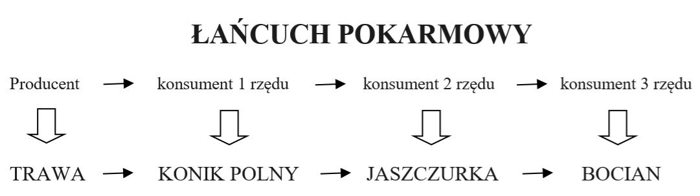
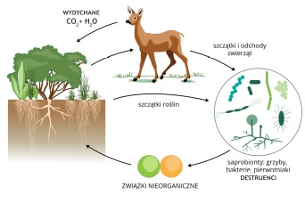

Nauczanie zdalne
Klasa 8A
wychowawca Beata Klimowicz
Piątek 03.04.2020r
informatyka
religa
w-f
edukacja dla bezpieczeństwa
WYCHOWANIE FIZYCZNE - DZIEWCZYNY
TEMAT: Organizacja aktywnych form spędzania wolnego czasu
#zostań w domu trenuj w domu !!!
Przypominam o zasadach bhp podczas ćwiczeń w domu ,tak jak na lekcjach wf w szkole. Proszę również pamiętać, że ćwiczymy tylko i wyłącznie jak jesteśmy zdrowi !
Potrzebne przybory : krzesło ,koc
1. Stojąc bokiem do krzesła oprzyj swoją rękę na jego oparciu, natomiast drugą ułóż na biodrze. Wyciągnij przed siebie jedną nogę, a drugą uginaj wykonując swego rodzaju przysiad na jednej nodze.
2. Leżąc na plecach opieraj stopy na siedzisku krzesła, natomiast ręce ułóż swobodnie wzdłuż tułowia. Teraz na zmianę unoś i opuszczaj biodra. To ćwiczenie można również wykonując z naprzemiennym prostowaniu raz lewej, a raz prawej nogi.
3. Ustaw się przodem do oparcia krzesła, z którym ćwiczysz. Następnie wyciągaj raz jedną, raz drugą nogę maksymalnie do tyłu tyle ile możesz. Pamiętaj, aby zachować przy tym proste plecy.
4. Przy pomocy krzesła możesz wykonywać również pompki. Wystarczy, że ułożysz ciało w pozycji podporu przodem, jednak opierając dłonie o siedzisko krzesła. Następnie, opierając stopy mocno o ziemię wykonuj pompki.
5. Istnieje również druga forma pompek z krzesłem. Trzeba jednak zmienić ułożenie. Wtedy to na krześle trzymać należy stopy, natomiast ręce powinny opierać się na podłodze -to ćwiczenie tylko dla chętnych
6. Ćwiczenia z krzesłem można wykonywać także siedząc na nim. Wystarczy usadowić się na skraju krzesła i prostymi plecami opierać się o jego oparcie. Następnym krokiem jest ugięcie nóg i przyciąganie je jak najbliżej klatki piersiowej.
7. Korzystając z pomocy krzesła można również wykonywać nieco odmienioną formę klasycznych przysiadów. W tym przypadku polegają one na uginaniu nóg jak do przysiadów przy jednoczesnym trzymaniu się za oparcie krzesła.
8. Siedząc na krześle można wykonywać także skręty tułowia. Najpierw trzeba wygodnie usiąść, a potem założyć ręce na szyję. Następnie trzeba odwrócić się tułowiem w lewą stronę i unosić lewą nogę tak, aby dotykała łokcia z naszej prawej ręki. Analogicznie trzeba wykonywać to ćwiczenie na drugą stronę.
9. Trzymając się za oparcie krzesła można wykonywać także ćwiczenie określane jako wykopy w bok. Polega ono na tym, aby trzymając oparcie starać się utrzymać równowagę, przy jednoczesnym unoszeniu jak najwyżej prawej nogi. Później to samo ćwiczenie trzeba wykonać z wykorzystaniem lewej nogi. Można także na zmianę wymachiwać prawą i lewą nogą.
10. Jeśli dysponuje się dwoma takimi samymi krzesłami trzeba ustawić je naprzeciwko siebie. Następnie trzeba wejść w występującą pomiędzy nimi przerwę i przytrzymać się rękami na siedzisku krzeseł. Następnie trzeba ćwiczyć siłę swych rąk i utrzymywać ciężar całego ciała wisząc w powietrzu
Każde z ćwiczeń wykonaj min.5 razy
Powyższe ćwiczenia pomogą Ci zachować odpowiednią wagę i smukłą sylwetkę. Wykonuj je każdego dnia, a sama zobaczysz, że wzmocnią się mięśnie Twoich nóg, ud, pośladków oraz ramion. Sama widzisz, że do zachowania dobrej kondycji nie jest potrzebny specjalistyczny sprzęt.
Dla chętnych czyli dla Ciebie przesyłam krótki filmik z ćwiczeniami rozciągającymi
https://www.youtube.com/watch?v=AXeGwLH9m2g
Pozdrawiam
WYCHOWANIE FIZYCZNE- chłopcy
Temat : Ćwiczenia ruchowe
W tym tygodniu Twoje zadanie to wykonywanie ćwiczeń ruchowych,
które zamieszczam poniżej.
Pamiętaj , aby ćwiczyć tylko wtedy ,kiedy jesteś zdrowy ,jeśli cokolwiek
Ci dolega, źle się czujesz lub coś Cię boli, to nie ćwicz.
Zaczynamy od rozgrzewki ( 10 ćwiczeń ,które znasz z lekcji wychowania fizycznego),powinna trwać ok. 10 - 15 minut.
Propozycja ćwiczeń na aktywność w domu :
1. Bieg w miejscu ( liczymy do 50 )
2. Krążenia ramion ( w tył i w przód 10x )
3.Krążenia bioder ( w lewo i w prawo 10x )
4. Bieg w miejscu z wysokim unoszeniem kolan ( licz do 40 )
5. Zrób rozkrok i wykonaj skłon tułowia ( raz do jednej, raz do drugiej nogi 10x)
6. Brzuszki ( ramiona skrzyżowane na barkach lub wzdłuż tułowia 25 x )
Po każdym ćwiczeniu rozluźniamy mięśnie.
Każdą serie powtórz 3 razy lub w zależności od samopoczucia.
Zachęcam do korzystania z dostępnych w tv i Internecie wielu propozycji
ćwiczeń fizycznych do samodzielnego wykonania w domu.
INFORMATYKA
Temat: Więcej o pracy w arkuszu kalkulacyjnym
1. Wejdź na stronę:
https://dlaucznia.migra.pl/teraz-bajty.-informatyka-dla-szkoly-podstawowej.-klasa-viii/praca-samodzielna/
Temat 13 Więcej o pracy w arkuszu kalkulacyjnym
2. Pobierz temat
Zapoznaj się z punktem 2 Linie siatki w arkuszu kalkulacyjnym
3. Jeszce raz wejdź na stronę:
https://dlaucznia.migra.pl/teraz-bajty.-informatyka-dla-szkoly-podstawowej.-klasa-viii/praca-samodzielna/
Pobierz pliki ćwiczeniowe
4. W folderze LibreOffice otwórz plik T13_z1_Oceny
5. Zapisz go na swoim komputerze w folderze Dokumenty
6. Wykonaj obliczenia:
W kolumnie suma ocen użyj funkcji suma symbol
W wierszach suma 6, suma 5 itd. na jednego ucznia użyj formuły
=liczba 6/suma uczniów
Przykład:
W komórkę J3 wpisz: =C3/B3 i wciśnij klawisz Enter
Powinien wyświetlić się wynik 0,533333
W komórkę K3 wpisz =D3/C3 i wciśnij klawisz Enter itd.
7. Sformatuj tabelę arkusza.
Zaznacz tabelę od komórki A1 do O18
Kliknij prawym przyciskiem myszy w obrębie tabeli
W menu wybierz polecenie Formatuj komórki
W okienku dialogowym wybierz zakładkę Krawędzie
Zmień kolor i grubość krawędzi
8. Plik zapisz j i prześlij go w załączniku na adres:
jakrzemian@gmail.com
Programy potrzebne do realizacji tematu (do wyboru):
LibreOffice (do pobrania bezpłatnie w ramach pakietu LibreOffice)
https://www.libreoffice.org/download/download/
Arkusze Google (wersja online bezpłatnie)
https://www.google.pl/intl/pl/sheets/about/
Katecheza 47/48 (na 14 tydzień marca br.)
Umiejętność rozmowy; jak unikać konfliktów
Proszę obejrzeć obie prezentacje i tak:
Z pierwszej odpowiedz na pytanie: Wymień dwa podstawowe warunki komunikacji werbalnej.
Z drugiej prezentacji odpowiedz na pytanie: czym jest konflikt?
https://prezi.com/vo7v_vofwnyt/umiejetnosc-rozmowy-i-suchania-innychumiejetnosc-odmawian/
https://prezi.com/j7vq-iav5r3j/powstawanie-i-agodzenie-konfliktow/
RELIGIA
Życzę miłego oglądania prezentacji
ostatnio was umęczyłem czytaniem, więc teraz, katecheza jest bardziej nastawiona na przemyślenie treści zawartych w tych dwóch prezentacjach.
Jako podsumowanie wpisz do zeszytu te 13 punktów.
JAK UNIKAĆ KONFLIKTÓW Z RODZICAMI I NIE TYLKO Z RODZICAMI
1. Dotrzymuj złożonych obietnic.
2. Wypełniaj swoje obowiązki.
3. Mów prawdę.
4. Pracuj nad swoim charakterem.
5. Panuj nad formami wyrażania gniewu (staraj się zachowywać spokój).
6. Zawsze szukaj porozumienia i nie odwracaj się od ludzi proponujących Ci dialog rozmawiaj.
7. Nie żałuj swojego czasu dla innych.
8. Kiedy coś zrobiłeś źle lub wyrządziłeś komuś krzywdę, przyznaj się, przeproś i napraw.
9. Kiedy ktoś wyrządził Ci krzywdę, wybaczaj.
10. Nie ulegaj zniechęceniu, frustracji i poczuciu bezsensu.
11. Nie zniechęcaj się poczuciem winy z powodu własnych niepowodzeń i błędów.
12. Nie potępiaj ludzi.
13. Miej zdrowe poczucie humoru. Naucz się żartować z samego siebie.
EDUKACJA DLA BEZPIECZEŃSTWA
Temat: Zasady opatrywania ran i krwotoków.
Proszę obejrzeć te 3 filmiki instruktarzowe dotyczące opatrywania różnych rodzajów ran:
Krwotoki
https://www.youtube.com/watch?v=YX9478FiAtI
Amputacja
https://www.youtube.com/watch?v=kce_6G7iRno
Rany
https://www.youtube.com/watch?v=ekIt8InT8eI
Notatka do zeszytu:
Rany pierwsza pomoc :
1. Zapewnij bezpieczeństwo poszkodowanemu i sobie usuń/zabezpiecz narzędzie, które zraniło lub może zranić poszkodowanego i osoby w otoczenia.
2. Jeśli przedmiot, który spowodował ranę tkwi w ciele poszkodowanego nie wyciągaj go, pełni tymczasową funkcję tamowania krwotoku; otarć lub skaleczeń nie przemywaj za pomocą wacika czy gazy do rany mogą dostać się zanieczyszczenia i roztocza, które mogą być przyczyną zakażenia.
3. Należy położyć lub posadzić poszkodowanego, wstępnie ocenić poziom rany i zdecydować, czy konieczne jest wezwanie pomocy.
4. W przypadku otarcia, drobnego skaleczenia, niewielkiej rany wystarczy przepłukać zranione miejsce wodą; w przypadku większych urazów należy użyć środka odkażającego przed procesem dezynfekcji rany należy usunąć większe zanieczyszczenia; na większość otarć nie jest potrzebny plaster i dodatkowo opatrunek niegroźna rana dłużej się goi, jeśli jest zakryta.
5. Po odkażeniu/obmyciu wodą rany należy założyć opatrunek najlepiej sprawdzą się: gaza opatrunkowa i/lub gazik, czyli materiały bez sztucznych tworzyw.
6. W przypadku intensywnego krwawienia należy nałożyć na gazę dodatkowy materiał opatrunkowy ucisk powinien zatamować i pochłonąć krew; jeszcze większy ucisk można osiągnąć za pomocą opaski uciskowej.
W ramach ćwiczeń praktycznych proszę wykonać w domu, jednemu z chętnych bliskich, opatrunek osłaniający dłoni używając gazika jałowego i bandaża. Powodzenia:)
Czwartek 02.04.2020r
j.angielski
geografia/przyroda
technika
matematyka
MATEMATYKA
Temat :Pole powierzchni i objętość graniastosłupa- zadania. 2.04.2020
Zadania do wykonania .
1. Oblicz pole powierzchni i objętość prostopadłościanu o wymiarach: 2cm, 3cm,5cm.
P=
V=
2.Oblicz pole powierzchni i objętość sześcianu o wymiarze a=4cm.
P=
V=
3. Oblicz objętość graniastosłupa trójkątnego, którego pole podstawy wynosi 10cm2, a H=5cm.
V=
4.Jakie pole ma sześcian o V-27cm3
P=
5. Czy 15 litrów wody zmieści się w akwarium w kształcie prostopadłościanu o podanych wymiarach: 20cm, 1,6dm, 3,5dm.
a/ Dokonaj obliczeń.
b/ TAK-NIE
6. Ile litrów wody mieści się w akwarium , które ma kształt prostopadłościanu o wymiarach: 6dm,30cm,45cm.
A/ 8,1 B/ 81 C/ 810 D/8100.
7. Oblicz pole powierzchni całkowitej graniastosłupa prostego, którego podstawą jest kwadrat o wymiarach a=5cm a wysokość wynosi 7cm.
Obliczenia:
A/ 8,1 B/ 81 C/ 810 D/8100. Obliczenia:
Wykorzystaj wzory z poprzedniej lekcji
Zwrot rozwiązanych zadań-6.04.2020r. - na pocztę.
Przypominam o zwrocie zaległych prac. Za prace otrzymujecie oceny.
Miłego liczenia .Pozdrawiam p Zosia.
GEOGRAFIA
Temat: Środowisko przyrodnicze Australii i Oceanii.
Przepisz notatkę do zeszytu:
Australia (formalnie Związek Australijski, państwo demokratyczne, położone na półkuli południowej, obejmujące kontynent Australia, wyspę Tasmanię i inne znacznie mniejsze wyspy na Oceanie Indyjskim i Spokojnym. Stolicą kraju jest Canberra, największym miastem jest Sydney.
Jest szóstym pod względem powierzchni państwem świata i jedynym państwem na świecie obejmującym cały kontynent. Jest zamieszkiwane przez 25 mln osób, z czego 2/3 populacji mieszka w pięciu największych australijskich metropoliach. Australia jest krajem wysoko rozwiniętym, ze społeczeństwem wielokulturowym.
Jest to jeden z najbardziej płaskich kontynentów ze średnią wysokością 330 m. Obszar pustynny zajmuje powierzchnię większą niż na jakimkolwiek innym kontynencie; 2/3 powierzchni leży w klimacie suchym lub półsuchym. Linia brzegowa Australii jest mało rozwinięta. Najwyższy szczyt Góra Kościuszki odkryty, zdobyty i nazwany przez Pawła Edmunda Strzeleckiego wznosi się na wysokość 2228 m n.p.m.
Obejrzyj film a następnie wypisz 3 ciekawostki o Australii
https://www.youtube.com/watch?v=_sSJuN1EZaE
https://www.youtube.com/watch?v=-qCTKyeFu0o
ZAJĘCIA TECHNICZNE-gr.1
Temat-Alternatywne źródła energii elektrycznej
https://www.youtube.com/watch?v=CoiGR53oY
Jak myślisz, który z wymienionych przykładów odnawialnych źródeł energii, mógłby być wykorzystany w naszej okolicy?
Temat: Ozdabianie tkanin - aplikacja ( lekcja 2)gr.2
Żeby wykonać aplikację na tkaninie musimy przygotować odpowiednie narzędzia i materiały.
Zadanie pierwsze
Wpisz do zeszytu pod planem pracy:
Materiały i narzędzia potrzebne do wykonania aplikacji: tkanina ( może być filc), kolorowe skrawki różnych tkanin, szpilki, nici, igła, nożyczki, kartka papieru tekturka, ołówek
Zadanie drugie.
Obejrzyj film. Dowiesz się jak wykonać proste aplikacje.
https://www.youtube.com/watch?v=A0PsgmOPbfo
Zadanie trzecie
Z dowolnych tkanin jakie masz w domu przyszyj na tkaninie małą aplikację według własnego pomysłu. Zrób zdjęcie gotowej pracy i prześlij mi ma mój adres e - mail.
Klasa 8 JĘZYK ANGIELSKI
Topic: Tom is stronger than Joe Tom jest silniejszy, niz Joe (stopniowanie przymiotników)
Stopień wyższy przymiotników KRÓTKICH (jednosylabowych i niektórych dwusylabwych)
tworzymy za pomocą końcówki er
stopień równy: stopień wyższy:
tall wysoki taller - wyższy
old stary older starszy
slim szczupły slimmer szczuplejszy
big duży bigger większy
happy szczęśliwy happier szczęśliwy, bardziej szczęśliwy
Zadanie 1. Utwórz stopień wyższy od podanych przymiotników według przykładu. Napisz po polsku, co one oznaczają.
Stopień równy stopień wyższy
short krótki, niski ...............................................
cheap [cziip] tani .................................................
fast szybki .................................................
slow wolny ..................................................
small - ............................................. ..................................................
young - ........................................... .................................................
long - .............................................. .................................................
Nieregularne formy przymiotników w wyższym stopniu:
good dobry better lepszy
bad zły worse - gorszy
Przy porównywaniu używamy spójnik THAN niż.
Zadanie 2. Przetłumacz zdania według przykladu:
Przykład:
Tom is taller than John. Tom jest wyższy, niż John.
A shirt is cheaper than a dress. Koszula jest tańsza, niż sukienka.
My house is bigger than my brothers house..................
Agnes is slimmer than Jane................................
My hair is shorter than yours. ............................
I am older than my sister. ............................
Środa 01.04.2020r
chemia
muzyka
WOS
j.polski
WOS
Temat: Prezydent i Rada Ministrów - kontynuacja
Proszę zapisać notatkę w zeszycie:
PREZYDENT - Andrzej Duda
PREMIER - Mateusz Morawiecki
Aby omówić z Radą Ministrów sprawy szczególnie ważne dla państwa (obecnie jest to epidemia koronawirusa), prezydent może zwołać tzw. Radę Gabinetową. Konsultacje te są formą współpracy rządu z głową państwa. Rada Gabinetowa nie podejmuje wiążących decyzji.
Proszę wykonać zadanie przy pomocy strony internetowej:
https://www.premier.gov.pl/
Dopisz imię i nazwisko ministra lub funkcje jaką pełni:
1. Piotr Gliński - .......................................................
2. ......................................- minister obrony narodowej
3. ......................................-minister rolnictwa i rozwoju wsi
4. Zbigniew Ziobro - .......................................................
5. ........................
.........- minister zdrowia
Przypominam, że w dalszym ciągu należy uzupełniać tabelkę z wydarzeniami, która znajduje się na końcu zeszytu.
Zostanie ona sprawdzona po powrocie do szkoły.
Chemia
Klasa 8
Temat: Kwas metanowy
1. Wejdź na wikipedię.
2. Wpisz kwas metanowy.
Odpowiedz na pytania:
1. Gdzie występuje kwas metanowy?
2. Przez kogo został odkryty?
3. Wymień 3 sposoby otrzymywania kwasu metanowego na skalę przemysłową.
4. Napisz wzór sumaryczny.
5. Jaką barwę i jaki zapach ma kwas metanowy?
6. Jaką ma temperaturę topnienia i wrzenia?
7. Do czego go stosujemy?
Narysuj w zeszycie znak oznaczający substancję żrącą.
JĘZYK POLSKI KL.8A
Temat lekcji- Co wiemy o Oskarze, bohaterze utworu E.Shmitta?
Książka ''Oskar i pani Róża'' autorstwa Érica-Emmanuela Schmitta opowiada o dziesięcioletnim Oskarze - głównym bohaterze, który umiera na białaczkę. W uporaniu się z codziennością pomaga mu Pani Róża. To właśnie ona wpada na pomysł pisania listów do Boga, a także traktowania każdego dnia życia jako dziesięciu lat. W taki sposób Oskar pisze listy opisując'' dziesięć lat swojego życia. Pan Bóg jest dla niego kimś coraz bliższym i mały chłopiec otwiera się przed Stwórcą coraz bardziej. Dzieli się z nim swoimi myślami, spostrzeżeniami i problemami. Z każdym listem zaczyna coraz bardziej wierzyć w Boga i godzi się z tym, iż będzie musiał umrzeć. Pomimo dość smutnej tematyki choroby, śmierci, poczucia osamotnienia, książka jest bardzo pogodna, wręcz zabawna. Przepełnia ją optymizm i radość życia. Czytając niezwykłe listy małego Oskara do Pana Boga, jego przygody miłosne i rozmowy z panią Różą ,sprawiają że człowiek czuje potrzebę dokonania zmian w swoim życiu, zauważamy, że życie to coś, czego nie można zmarnować.
Zadanie dla uczniów:
1.Zapisz temat do zeszytu.
2.Przeczytaj tekst pod tematem, a następnie wejdź na poniższe linki:
https://www.youtube.com/watch?v=_L-tNltzs-s
https://www.youtube.com/watch?v=uqef9q-zpBQ
3. Odpowiedz pisemnie na pytanie zawarte w temacie.
4.Napisz list do Pana Boga opisując swój jeden dzieńpamiętaj o formie listu.
List-
Miejscowość, data-w prawym górnym rogu.
Nagłówek np. Droga Ciociu!
Pamiętaj o formie grzecznościowej- np. Tobie , Ciebie .
Wstęp, rozwinięcie, zakończenie
Podpis
Wtorek 31.03.2020r
matematyka
fizyka
plastyka
Fizyka
Temat : Fale elektromagnetyczne
Przepisz do zeszytu:
Fala elektromagnetyczna istnieje wokół nas to rozchodzące się w przestrzeni i przenikające się wzajemnie zmienne pola elektryczne i magnetyczne. Dzięki nim działają np. telefony komórkowe. Te fale mogą rozchodzić się nawet w próżni czego nie mogą robić fale dźwiękowe i mechaniczne. Fal elektromagnetycznych jest dużo, charakteryzują się one różną długością i częstotliwością..
zad.
Obejrzyj film na
https://www.youtube.com/watch?v=x8tJGv8sNQA&t=599s
Odpowiedz do zeszytu na pytania:
Wymień w jakich urządzeniach i dziedzinach życia człowieka znalazły zastosowanie fale elektromagnetyczne.
Czy wszystkie fale elektromagnetyczne są dla człowieka widoczne?
Matematyka Temat: Pole powierzchni i objętość graniastosłupów
Do realizacji tematu korzystamy ze stron:
1. Graniastosłupy-Matematyka-Opracowania.pl / z tej strony-graniastosłup czworokątny- rys. i oznaczenia, graniastosłup trójkątny- rys, i oznaczenia, wzory pole i objętość, sześcian- rys. wzory/
2.Graniastosłupy proste- Epodrecznik.pl / definicja i 3 rysunki graniastosłupów/
3,Matemaks.pl / prostopadłościan -rys i wzór pole i objętość oraz zad.1-rozwiązanie wideo, sześcian- rys. i wzór pole i objętość oraz zad,1,3,4- rozwiązanie wideo-przykłady/
Informacje mają być w zeszycie- rysunki, wzory, zadania. Sprawdzę jak wrócimy do szkoły.
Czekam na zaległe zadania do oceny -przesłać na moją pocztę.
Miłej pracy. Pozdrawiam p. Zosia
Poniedziałek 30.03.2020r
język polski
historia
biologia
język polski-kl. 8
temat lekcji-Prawo do normalności, czyli na co zwraca uwagę film Chce się żyć?
notatka do zeszytu-
Chce się żyć" Macieja Pieprzycy -to poruszająca opowieść o uwięzionym przez wiele lat we własnym ciele chłopcu . Film powstał na podstawie książki, zdobył główną nagrodę na festiwalu filmowym w Montrealu.
Reżyser - Maciej Pieprzyca
odtwórca głównej roli - Dawid Ogrodnik
Rok 1981. Na świat przyszedł Mateusz Rosiński. Lekarze zdiagnozowali u niego porażenie mózgowe, informując rodziców, że chłopiec jest upośledzony zarówno fizycznie jak i umysłowo. Nie dawali mu żadnych szans na prawidłowy rozwój. Postawiona diagnoza okazała się błędna. Mateusz prawidłowo rozwijał się intelektualnie, tylko jego ciało nie pozwalało mu na komunikację z otaczającym go światem. Chłopiec przez lata przyglądał się zmaganiom swoich rodziców, którzy nie chcieli się pogodzić z kalectwem syna. Obserwował jak dorasta jego rodzeństwo. Wielokrotnie próbował skomunikować się z otoczeniem i przekazać światu wiadomość, że nie jest rośliną. Udało mu się to dopiero wiele lat później. Niespodziewanie znalazł się ktoś, kto wreszcie zrozumiał sygnały wysyłane przez Mateusza.
Akcja powieści rozgrywa się w Polsce, a jej tłem jest zachodząca właśnie transformacja ustrojowa. Zadanie dla uczniów:
Zobacz fragmenty filmu Chce się żyć
https://www.youtube.com/watch?v=QP3zjGs10s4
Podczas oglądania zwróć uwagę na cechy charakteru Mateusza, jego postawę życiową.
Przeczytać recenzję filmu.
http://kulturalnie.waw.pl/artykuly/1291/chce-sie-zyc-2013---recenzja-.html
Odpowiedz pisemnie na pytanie zawarte w tekście (2-3 zdania).
HISTORIA
Temat: Postalinowska odwilż i mała stabilizacja.
Obejrzyj krótki film:
https://www.youtube.com/watch?v=wJeo81T9jco
Zapisz notatkę do zeszytu:
Śmierć Stalina w 1953 roku nie przyniosła w Polsce od razu zauważalnej zmiany polityki władz. Nadal panował terror. Pierwsze oznaki złagodzenia systemu rządów pojawiły się stopniowo. Ograniczono władze aparatu bezpieczeństwa i nadzór nad obywatelami. Na wolność wypuszczono część więźniów politycznych, zelżała cenzura. Działania te nazwano destalinizacją.
28 i 29 czerwca 1956 r. w Poznaniu doszło do robotniczych protestów, które przerodziły się w walki uliczne. Władze komunistyczne do ich stłumienia użyły wojska. W konsekwencji śmierć poniosło co najmniej 79 osób, rannych było ponad 600.
Okres sprawowania władzy przez Gomułkę jest nazywany "małą stabilizacją", ponieważ władzę odeszły częściowo od polityki represji i pozwoliły na poprawę warunków życia w zamian za spokój społeczny
Zadanie domowe:
Napisz w 4 zdaniach kim był Władysław Gomułka?
Biologia
Temat: Zależności pokarmowe i obieg materii i energii w ekosystemie.
Najpierw przypomnij sobie z poprzednich lekcji:
? Co to jest ekosystem i jakie mamy rodzaje ekosystemów?
? Jakie poznaliśmy zależności między gatunkami dodatnie (nieantagonistyczne) i ujemne(antagonistyczne)?
Każdy organizm potrzebuje różnych substancji do budowy własnego ciała. Substancje te nazywamy związkami organicznymi. Należą do nich białka, tłuszcze i cukry. Rośliny zielone wytwarzają takie substancje z dwutlenku węgla i wody. Wykorzystują do tego energię światła słonecznego. Proces ten nazywamy fotosyntezą. Rośliny same wytwarzają substancje potrzebne im do życia nazywamy je producentami produkują związki organiczne z nieorganicznych. Mówimy też, że są organizmami samożywnymi.
Zwierzęta nie są w stanie wytwarzać pokarmu więc muszą zjadać inne organizmy są cudzożywne. Dlatego nazywane są konsumentami (konsumują spożywają gotowe związki organiczne wytworzone przez producentów czyli przez organizmy samożywne np. rośliny). Większość zwierząt zjada rośliny. Roślinożerców nazwano konsumentami pierwszego rzędu, co oznacza, że żywią się producentami. Z kolei drapieżniki czy padlinożercy żywią się innymi organizmami cudzożywnymi nazywa się je więc konsumentami drugiego rzędu. Możliwe jest jednak, że takiego mięsożercę pożera inny drapieżnik. Nazywamy go wówczas konsumentem trzeciego rzędu.
Zauważmy, że producentów i zależnych od nich konsumentów można uporządkować w szeregu, w którym poprzedni organizm jest pożerany przez następnego. Taki szereg nazywamy łańcuchem pokarmowym. W łańcuchu składającym się z trawy, konika polnego, jaszczurki i bociana każdy organizm jest kolejnym ogniwem łańcucha. Trawa jest producentem, roślinożerny konik polny jest konsumentem pierwszego rzędu, owadożerna jaszczurka zjadająca konika jest konsumentem drugiego rzędu, a zjadający jaszczurkę bocian konsumentem trzeciego rzędu.

Ważnym elementem środowiska są organizmy zwane destruentami. Należą do nich na przykład grzyby i liczne bakterie, które dokonują rozkładu szczątków roślin, zwierząt i ich odchodów- ponieważ żywią się martwą materią organiczną nazywa się je saprobiontami. Na skutek ich działalności materia organiczna zostaje przekształcona w proste związki mineralne. Wracają one do środowiska i stanowią nawóz użyźniający glebę i mogą być ponownie wykorzystane przez rośliny. Destruentów nie będziemy uwzględniać w sieciach pokarmowych, gdyż mogą żywić się szczątkami każdego organizmu. Warto jednak pamiętać, że same również mogą stanowić pokarm dla różnych zwierząt.

Materią nazywamy wszystkie znane substancje. Z materii zbudowane są rośliny, zwierzęta i człowiek oraz środowisko. Materii w przyrodzie nie ubywa ani nie przybywa. Uczestniczy za to w nieustannym obiegu. Jak już wiemy, proste związki (np. woda, dwutlenek węgla czy sole mineralne) są przyswajane przez producentów w procesie fotosyntezy. Wytwarzane są z nich białka, cukry i tłuszcze budujące roślinę. Kiedy roślina zostanie zjedzona, związki te zostają wykorzystane przez roślinożercę do budowy jego organizmu. Część materii zostaje wydalona, np. w postaci prostych związków nieorganicznych, jak woda i dwutlenek węgla w procesie oddychania lub nieco bardziej złożonych w postaci kału i moczu. Drapieżniki zjadają roślinożerców i materia trafia z kolei do nich. Kał i mocz oraz ciała wszystkich organizmów po ich śmierci są rozkładane przez destruentów na proste związki chemiczne. Te znów są wykorzystywane przez producentów i obieg się zamyka w kole życia.
Energia, której na wszystkie funkcje życiowe potrzebuje każdy żywy organizm, np. wzrost, rozwój, poruszanie, trawienie, utrzymanie stałej temperatury ciała, wydalanie, rozmnażanie, słyszenie, widzenie, zapamiętywanie uzyskiwana jest przez organizmy samożywne producentów ze słońca i w procesie fotosyntezy i magazynowana jest w związkach organicznych zwłaszcza w cukrach i tłuszczach. Konsumenci energię słońca zmagazynowaną w tłuszczach i cukrach dzięki pracy producentów, uwalniają dla siebie w procesie oddychania. Niewykorzystana energia ze związków organicznych nie wraca do obiegu ulatuje bezpowrotnie i tracona jest z wydychaniem, odchodami, potem. Mówimy, że energia przepływa przez ekosystem, a nie krąży w nim jak materia.
ZADANIA: WPISZ DO ZESZYTU PRZEDMIOTOWEGO
1. Wpisz do zeszytu przedmiotowego temat lekcji.
2. Przeczytaj uważnie treść lekcji.
3. Pod tematem w zeszycie wyjaśnij pojęcia:
- producent - konsument - destruent
1. Utwórz łańcuch pokarmowy własnego pomysłu wpisz do zeszytu
2. Odpowiedz pisemnie na poniższe pytania:
A. Zakreśl właściwą odpowiedź.
Rośliny są destruentami/kosumentami/producentami, gdyż same wytwarzają substancje potrzebne im do budowy własnego ciała i prowadzenia procesów życiowych. Zwierzęta nie są w stanie wytwarzać tlenu/pokarmu, więc muszą zjadać inne organizmy. Zwierzęta zjadające rośliny nazywane są konsumentami/producentami/drapieżnikami/mięsożercami pierwszego rzędu. Zwierzęta polujące na inne zwierzęta to drapieżniki/destruenci/roślinożercy/pasożyty.
B. Zakreśl właściwą odpowiedź.
Grzyby i bakterie dokonują rozkładu opadów/żywych szczątków /szczątków/pierwiastków organicznych. Organizmy te nazywane są destruentami/producentami/drapieżnikami/roślinożercami. Rozkładają materię organiczną na proste białka/związki chemiczne/tłuszcze/kawałki, które wracają do środowiska i mogą być ponownie wykorzystane przez drapieżniki/zwierzęta/konsumentów/producentów.
C. Oceń prawdziwość stwierdzeń wpisz P - prawda, F - fałsz.
Żaba zjadająca ślimaka jest konsumentem I rzędu P/F
Zając zjadający kapustę jest konsumentem II rzędu P/F
Zając zjadający kapustę jest konsumentem II rzędu P/F
Człowiek jest organizmem samożywnym, gdyż sam sobie przygotowuje posiłki P/F
Energia zawarta w związkach organicznych pokarmów P/F
dla konsumentów pierwotnie pochodzi ze słońca
Każdy konsument jest organizmem cudzożywnym P/F
Archiwum
25-27.03